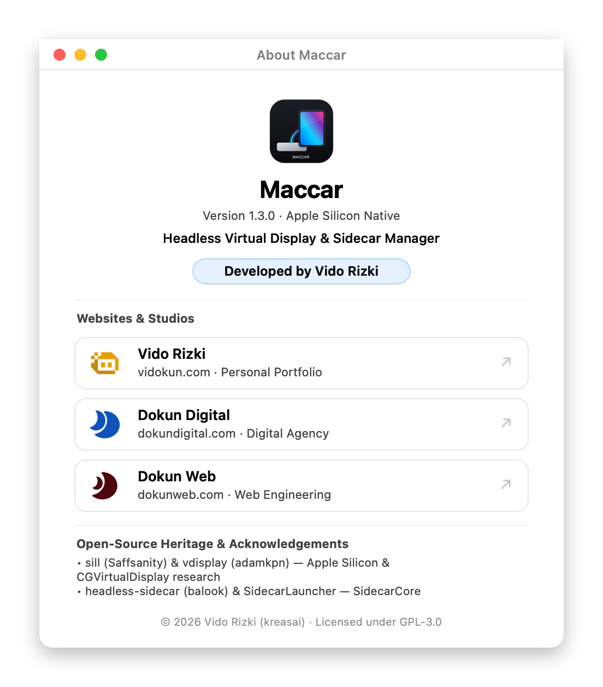
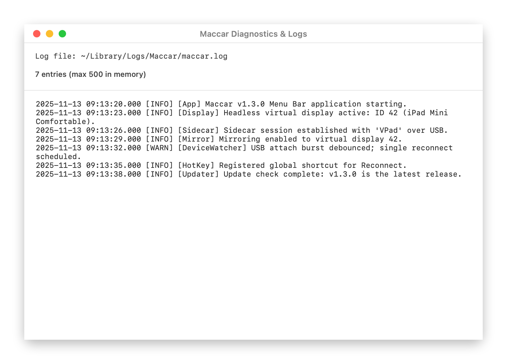

One-line CLI installer
No Xcode and no Command Line Tools. Add --dry-run to preview the checks, --version to pin a release, or --prefix to pick another folder.
Headless Sidecar for macOS 14+
Apple needs a display before Sidecar will start. Maccar creates a Retina screen in macOS memory instead, so your iPad connects over USB-C or Wi-Fi with no HDMI dummy plug.
The installer checks macOS 14+, the SHA-256 digest, and the code signature before it touches /Applications.
curl -fsSL https://raw.githubusercontent.com/vidokun/Maccar/main/install.sh | shNo Xcode and no Command Line Tools. Add --dry-run to preview the checks, --version to pin a release, or --prefix to pick another folder.
Open the image, drag Maccar.app into Applications, then launch it. Later releases arrive through Check for Updates in the menu bar.
Menu bar controls, the about window, and rotating diagnostics.

Version, attribution, and the GPL-3.0 notice.

Rotating logs, capped at 512 KB on disk.
CGVirtualDisplay allocates a Retina screen in memory, so Sidecar finds a display to extend or mirror.
A 750 ms USB attach hook wakes the session again, while repeated -200 failures back off instead of storming.
Check for Updates validates the manifest, the SHA-256 digest, the bundle identifier, and the code signature before staging.
Maccar is free and GPL-3.0. If it saved you a dummy plug purchase, you can chip in for the next release.
Maccar stands on public CoreGraphics and Sidecar research from the macOS community.
Apple Silicon headless virtual display and iPad workflow.
Private CGVirtualDisplay bridging patterns.
SidecarCore framework exploration and SidecarLauncher.